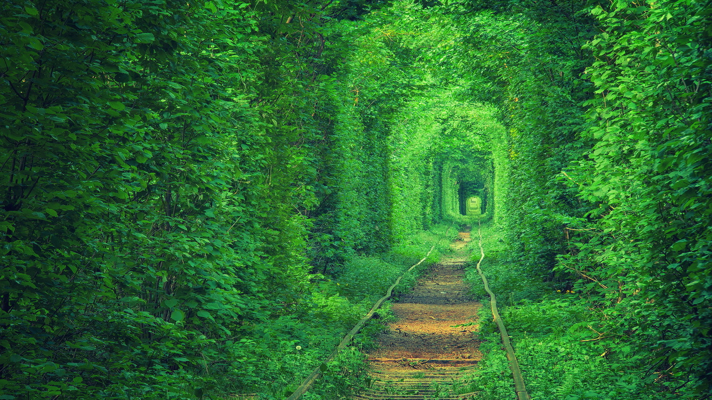
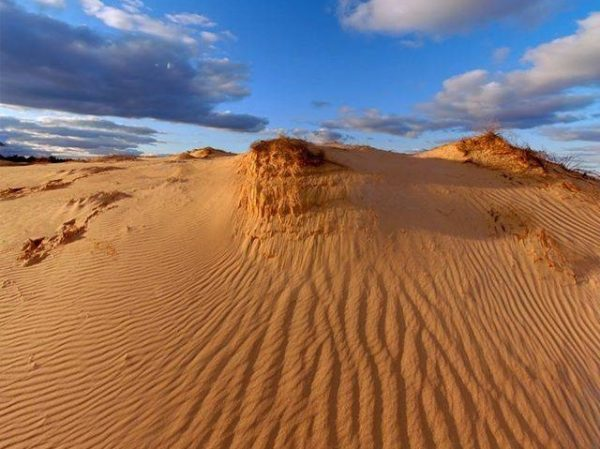
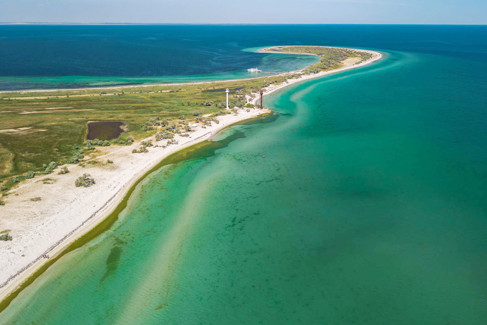
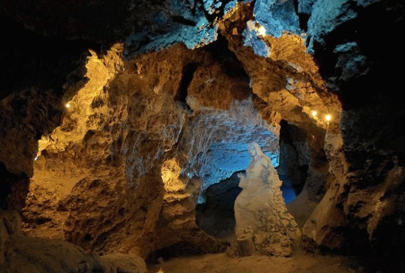

- Українське мертве море

В Україні є власне мертве море, розташоване поблизу Херсона. Там його називають лемурійське, адже вода в цьому озері забарвлена в рожевий колір.
Та на цьому дива не закінчуються, адже ця вода вважається лікувальною і омолоджуючою.
- Актовський каньйон

Каньйон знаходиться в Миколаївській області на річці Мертвовод.
Чому варто відвідати це місце?
Площа території складає 250 гектарів, а глибина 40-50 метрів, тому робити тут можна в прямому сенсі що завгодно.
Потрібно відзначити, що Актовський каньйон– це унікальний симбіоз водної та лісової екосистем, які в сумі дають чисте повітря і мрійливий настрій.
Ансамбль скель і гранітних валунів, які розташовані на території каньйону – унікальне місце у всій Європі. Це неймовірно красиво!
- Вилкове

Вилково розташувався на воді, як справжня Венеція! За чудесами однозначно потрібно їхати сюди.
Крім того, тут зливаються воєдино Дунай і Чорне море – видовище від якого неможливо відірватися.
Це місце чуло тисячі зізнань у коханні.
- Загадковий тунель любові

Українська Волинь сповнена загадками не менше, ніж Карпати. У Клевані розташувався таємничий тунель кохання, де щороку беруть шлюб люблячі серця.
Відзначимо, серед молодят популярна традиція – садити тут саджанці дерев або квіти, що символізують їх почуття. Це романтичне місце ботаніки називають феноменом, адже знаходиться тунель вздовж залізничної колії.
- Українська Сахара

На півдні України, у Херсонській області розташувалася найбільша в Європі пустеля – Олешківські піски.
Це найбільший піщаний масив країни, який недарма прозвали українською Сахарою. Площа пустелі займає майже 200 тисяч гектарів. Загальна довжина пустелі сягає 30 км з півночі на південь та 150 км із заходу на схід. Цікаво, що самі піски майже повністю оточують ліси, які перешкоджають поширенню піщаних мас територією всього Причорноморського регіону
- Українські Мальдіви

Острів Джарилгач – найбільший острів України, оповитий легендами і міфами, знаходиться в акваторії Чорного моря.
Перші згадки про нього зустрічаються в знаменитій праці Гомера «Одіссея». Унікальна по екології і красі територія жартівливо іменується «українськими Мальдівами». Тут разюче прозора вода, білий пісок і красива дика природа.
- ПЕЧЕРИ ТЕРНОПІЛЬЩИНИ

Тернопільщина - регіон з безліччю дивовижних пам'яток, тут є і старовинні замки, і дивовижні пейзажі. Ми рекомендуємо подивитися на Тернопільщину з іншого боку і вивчити її з-під землі. І це не жарт, адже в цьому регіоні найбільша кількість печер в Україні, тому радимо відвідати печери "Кришталеву", "Вертеба" та печерний храм "Монастирок".